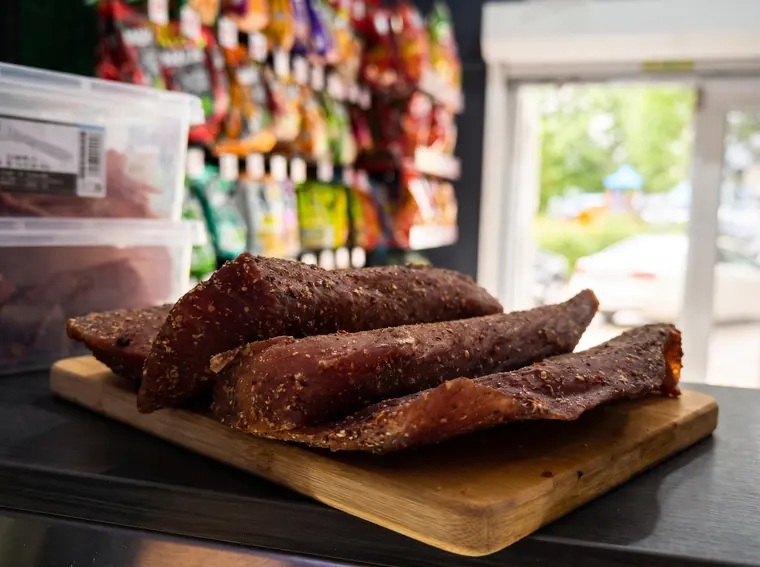

Свиные ушки и хрустящие мясные чипсы · КИШИНЁВ
Свиные закуски (Ушки и мясные чипсы)
Наряду с бастурмой, свиные ушки со специями и хрустящие мясные чипсы — отличный сытный выбор для тех, кто любит мясные закуски к пиву.

Характеристики и вкус
- Наличие
- Холодильная витрина · Ботаника и Буюканы
- Стиль
- Свиные ушки и хрустящие мясные чипсы
- Крепость / Горечь
- Carne la gramaj · Crocant & Picant
- Температура подачи
- Vitrina rece
- Цена ориентир.
- la gramaj
Аромат: Ароматные специи, чеснок и лёгкий дымок.
Вкус: Хрустящие, пикантные и насыщенные.
С чем сочетать в GYM BEER: Kozel Černý, HOLZ IPA, Beermaster IPA и HOLZ Vienna Lager.
Ежедневно 10:00–22:00 · Быстрый розлив в ПЭТ 1–2 л · Наличные, Карта и maib liberCard · Тел.: +373 69 482 293
Подача, хранение и сочетание с пивом в GYM BEER
Можно ли собрать микс из разных мясных закусок?
Конечно! Взвесим любой микс из бастурмы, ушек и мясных чипсов.
Как уточнить наличие на сегодня?
Позвоните по телефону +373 69 482 293 или заходите ежедневно с 10:00 до 22:00 на Ботанику или Буюканы.
Похожие позиции в меню: HOLZ Vienna Lager · HOLZ Gold · Groll Royal Pils · Götter Pilsner Нефильтрованное · London Beer
Полезные гиды: Как выбрать свежую копчёную рыбу · Гид: варёные раки и пиво · Все гиды ↗